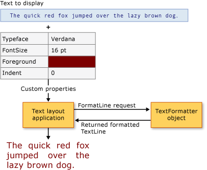

Дополнительное форматирование текста
Windows Presentation Foundation (WPF) предоставляет набор надежных API для включения текста в приложении. Макет и UI API, такие как TextBlock, обеспечивают наиболее распространенные и общие использовать элементы для представления текста. Рисование API, такие как GlyphRunDrawing и FormattedText, предоставляют средства для включения форматированного текста в рисунки. На наиболее продвинутом уровне WPF предоставляет расширяемый механизм форматирования текста для управления каждым аспектом представления текста: управление хранением текста, исполнением форматирования текста и внедренными объектами.
В этом разделе содержатся вводные WPF форматирование текста. Этот раздел посвящен реализации клиента и использовании WPF механизм форматирования текста.
Note
Все примеры кода в этом документе можно найти в пример расширенного форматирования текста.
Предварительные требования
В этом разделе предполагается, что вы знакомы с высоким уровнем API используемыми для представления текста. Большинство сценариев не требует расширенного форматирования текста API описанных в этом разделе. Введение в другой текстовой API, см. в разделе документы в WPF.
Дополнительное форматирование текста
Макет текста и UI элементов управления в WPF предоставляют свойства форматирования, которые дают возможность легко включать в приложение форматированный текст. Эти элементы управления предоставляют ряд свойств для обработки представления текста, включая гарнитуру, размер и цвет. В обычных условиях эти элементы управления могут обрабатывать большинство вариантов представления текста в приложении. Тем не менее некоторые расширенные сценарии требуют управления хранением текста, а также его представлением. WPF предоставляет расширяемый механизм форматирования текста для этой цели.
Найти дополнительные функции форматирования текста в WPF состоят из механизма форматирования, хранилища текста фрагментов текста и свойств форматирования текста. Механизм форматирования текста, TextFormatter, создает строки текста, используемые для представления. Это достигается путем запуска процесса форматирования строки и вызова модуля форматирования текста FormatLine. Модуль форматирования текста получает фрагментов текста из хранилища текста, вызывая магазина GetTextRun метод. TextRun Объекты затем формируются в TextLine объектов модулем форматирования текста и передаются в приложение для проверки или отображения.
Использование модуля форматирования текста
TextFormatter является WPF механизма форматирования текста и предоставляет службы для форматирования и переноса строк текста. Модуль форматирования текста может обрабатывать различные форматы текстовых символов и стили абзацев и включает поддержку международного макета текста.
В отличие от традиционного текстового API, TextFormatter взаимодействует с клиентом макета текста через набор методов обратного вызова. Требуется клиент для предоставления этих методов в реализации TextSource класса. Следующая диаграмма иллюстрирует взаимодействие макета текста между клиентским приложением и TextFormatter.

Модуль форматирования текста используется для извлечения форматированных строк текста из хранилища текста, который представляет собой реализацию TextSource. Для этого сначала создается экземпляр модуля форматирования текста с помощью Create метод. Этот метод создает экземпляр модуля форматирования текста и задает максимальные значения высоты и ширины строки. Как только создается экземпляр модуля форматирования текста, процесс создания строки, начатую посредством вызова FormatLine метод. TextFormatter обратный вызов к источнику текста для получения текста и параметров форматирования для фрагментов текста эту форму строки.
В следующем примере показан процесс форматирования хранилища текста. TextFormatter Объект используется для извлечения строк текста из хранилища текста и последующего форматирования строк текста для рисования в DrawingContext.
// Create a DrawingGroup object for storing formatted text.
textDest = new DrawingGroup();
DrawingContext dc = textDest.Open();
// Update the text store.
_textStore.Text = textToFormat.Text;
_textStore.FontRendering = _currentRendering;
// Create a TextFormatter object.
TextFormatter formatter = TextFormatter.Create();
// Format each line of text from the text store and draw it.
while (textStorePosition < _textStore.Text.Length)
{
// Create a textline from the text store using the TextFormatter object.
using (TextLine myTextLine = formatter.FormatLine(
_textStore,
textStorePosition,
96*6,
new GenericTextParagraphProperties(_currentRendering),
null))
{
// Draw the formatted text into the drawing context.
myTextLine.Draw(dc, linePosition, InvertAxes.None);
// Update the index position in the text store.
textStorePosition += myTextLine.Length;
// Update the line position coordinate for the displayed line.
linePosition.Y += myTextLine.Height;
}
}
// Persist the drawn text content.
dc.Close();
// Display the formatted text in the DrawingGroup object.
myDrawingBrush.Drawing = textDest;
Реализация клиентского хранилища текста
При расширении механизма форматирования текста необходимо реализовать все аспекты хранилища текста и управлять ими. Это довольно сложная задача. Хранилище текста отвечает за отслеживание свойств фрагментов текста, свойств абзаца, встроенных объектов и других подобных элементов. Он также предоставляет модуль форматирования текста с отдельными TextRun объектов, которые использует модуль форматирования текста для создания TextLine объектов.
Для обработки виртуализации хранилища текста, хранилища текста должен быть производным от TextSource. TextSource Определяет метод, используемый модулем форматирования текста для извлечения фрагментов текста из хранилища текста. GetTextRun — Это метод, используемый модулем форматирования текста для извлечения текста цепочек, используемых в форматировании строки. Вызов GetTextRun неоднократно осуществляется модулем форматирования текста, пока не произойдет одно из следующих условий:
Объект TextEndOfLine или подкласс возвращается.
Суммарная ширина фрагментов текста превышает ширину строк, указанную в вызове для создания модуля форматирования текста или вызов модуля форматирования текста FormatLine метод.
Объект Unicode возвращается последовательность новой строки, например «CF», «LF» или «CRLF,».
Предоставление фрагментов текста
Ядром процесса форматирования текста является взаимодействие между модулем форматирования текста и хранилищем текста. Реализация TextSource предоставляет модуль форматирования текста с TextRun объектов и свойств, с помощью которых форматируются исполнения текста. Это взаимодействие обрабатывается GetTextRun метод, который вызывается модулем форматирования текста.
В следующей таблице показаны некоторые из предварительно определенных TextRun объектов.
| Тип TextRun | Использование |
|---|---|
| TextCharacters | Специализированный фрагмент текста, который используется для передачи представления глифов символов обратно в модуль форматирования текста. |
| TextEmbeddedObject | Специализированный фрагмент текста, который используется для предоставления содержимого, в котором измерение, проверка нажатия и рисование выполняются в целом (например, кнопка или изображение в тексте). |
| TextEndOfLine | Специализированный фрагмент текста, который используется для обозначения конца строки. |
| TextEndOfParagraph | Специализированный фрагмент текста, который используется для обозначения конца абзаца. |
| TextEndOfSegment | Специализированный фрагмент текста, используемый для обозначения конца сегмента, например конца области, затронутых предыдущим TextModifier запуска. |
| TextHidden | Специализированный фрагмент текста, который используется для отметки диапазона скрытых символов. |
| TextModifier | Специализированный фрагмент текста, который используется для изменения свойств фрагментов текста в своей области. Область расширяется до следующего соответствия TextEndOfSegment текстовой цепочки или следующего TextEndOfParagraph. |
Любые из стандартных TextRun объектов может быть подклассом. Это позволяет источнику текста предоставлять модуль форматирования текста с фрагментами текста, включающими пользовательские данные.
В следующем примере демонстрируется GetTextRun метод. Это хранилище текста возвращает TextRun объектов для форматирования текста для обработки.
// Used by the TextFormatter object to retrieve a run of text from the text source.
public override TextRun GetTextRun(int textSourceCharacterIndex)
{
// Make sure text source index is in bounds.
if (textSourceCharacterIndex < 0)
throw new ArgumentOutOfRangeException("textSourceCharacterIndex", "Value must be greater than 0.");
if (textSourceCharacterIndex >= _text.Length)
{
return new TextEndOfParagraph(1);
}
// Create TextCharacters using the current font rendering properties.
if (textSourceCharacterIndex < _text.Length)
{
return new TextCharacters(
_text,
textSourceCharacterIndex,
_text.Length - textSourceCharacterIndex,
new GenericTextRunProperties(_currentRendering));
}
// Return an end-of-paragraph if no more text source.
return new TextEndOfParagraph(1);
}
Note
В этом примере хранилище текста предоставляет одни и те же свойства текста всему тексту. Расширенные хранилища текста могут потребоваться для реализации собственного управления диапазонами, чтобы позволить отдельным символам иметь разные свойства.
Задание свойств форматирования
TextRun объекты форматируются с помощью свойств, предоставляемых хранилищем текста. Эти свойства бывают двух типов TextParagraphProperties и TextRunProperties. TextParagraphProperties обрабатывать все свойства абзаца, например TextAlignment и FlowDirection. TextRunProperties — Это свойства, которые могут быть разными для каждого текста в абзаце, например кисть переднего плана, Typefaceи размер шрифта. Для реализации пользовательских абзацев и текст, типов свойств, приложение должно создавать классы, производные от TextParagraphProperties и TextRunProperties соответственно.